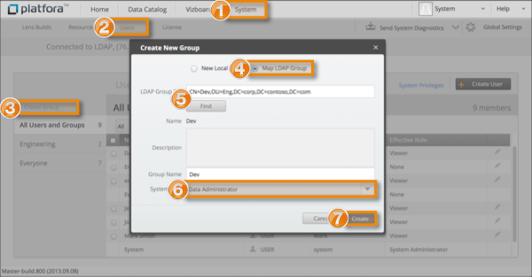

| Authenticate and Authorize Users / Configure LDAP User Authentication | |
You can add an LDAP group to Platfora by mapping in its distinguished name. LDAP users that are members of the group will then be able to access Platfora. When an LDAP user logs in to Platfora, they are automatically mapped into Platfora as long as they have group access.
When you map an LDAP group into Platfora, the LDAP users that belong to the group are automatically given access when they log in with their LDAP credentials. Note that since Platfora is not able to determine the membership count for LDAP groups, it doesn't display a membership count for LDAP groups.

Auto-created LDAP users will either inherit the system role of their parent group, or be assigned a role of Viewer if their parent group does not have a system role defined. If a user is a member of more than one group, then the most permissive role will take precedence.